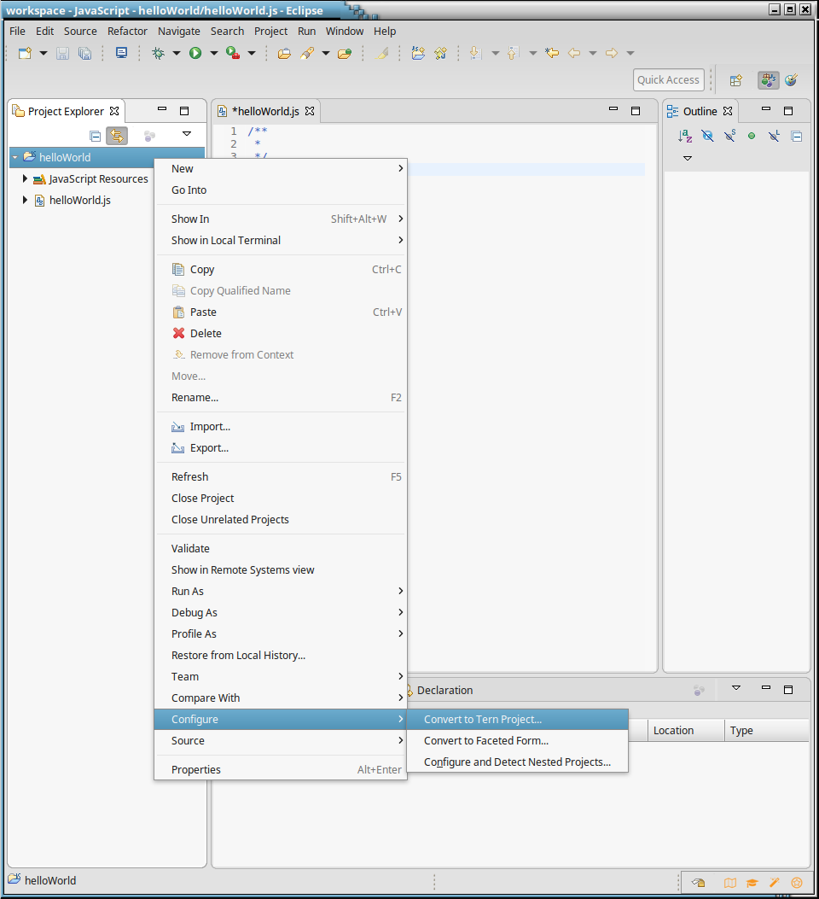
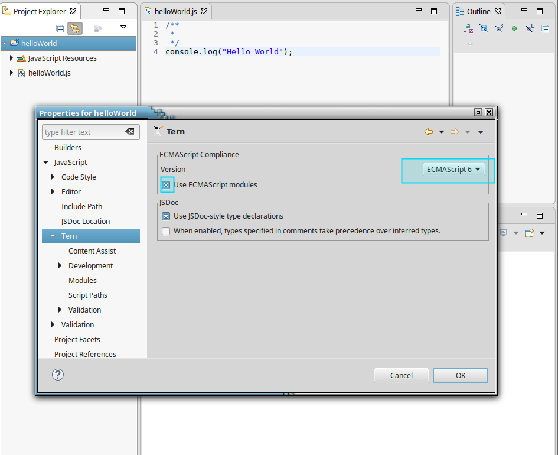
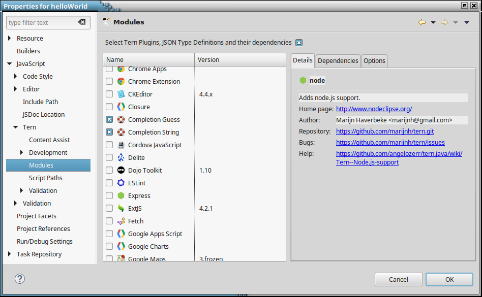

Introduction
Created for

Created by
Set up the development environment.
Eclipse IDE for JavaScript and Web Developers

Eclipse IDE for JavaScript Web Developers
Installation:
Eclipse IDE for JavaScript Web DevelopersNodeJS
On Windows
- Download
- Node Downloads
- Run the downloaded .msi installer
- requires administrator privileges
- Check if ok?
node -v- Update npm
npm install npm --global
NodeJS
Install Node.js from binaries: Installing Node.js via package manager
(covers most supported OS)
For troubleshooting check: NodeSource Node.js Binary Distributions
HelloWorld from JavaScript on Eclipse
Start new project
- File=>New=>JavaScript Project

- Create new JavaScript Source File
- main.js
- Write down:
- Run as Node.js Application
- Make sure the 'Console' tab is selected
console.log("Hello World");

Boost your productivity: Tern Eclipse IDE
Install
Tern Eclipse IDE
Install

Convert to Tern Project
{kind=link}
Tern project properties
{kind=link}
Tern - Code Completions, lint, etc
{kind=link}
Tern - Code Completions, lint, etc
- Other useful modules are:
- ESLint
- jQuery
- Node.js
Appendix
Change default port of HTTP Preview Server
- Go into your workspace directory
- open the file
.metadata.plugins\org.eclipse.wst.server.core\servers.xmlfor edit - Find the <server> element for the Preview server in question
- Add a port attribute, e.g. port="8181"
- Restart Eclipse to pickup the change.
Run JavaScript in Eclipse on node.js
How can I run script.js in Eclipse console?Contacts
progressbg.www.courses@gmail.comThese slides are based on
customised version of
framework